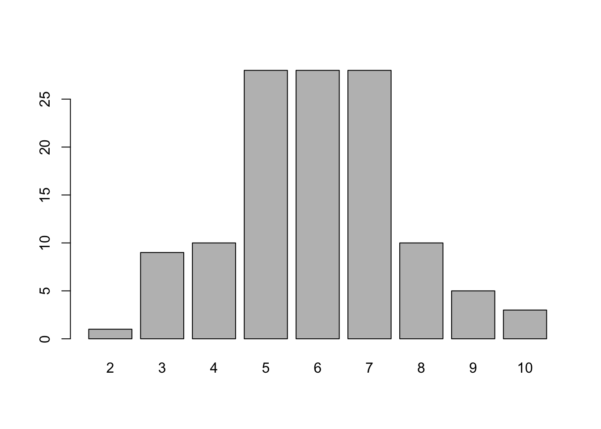
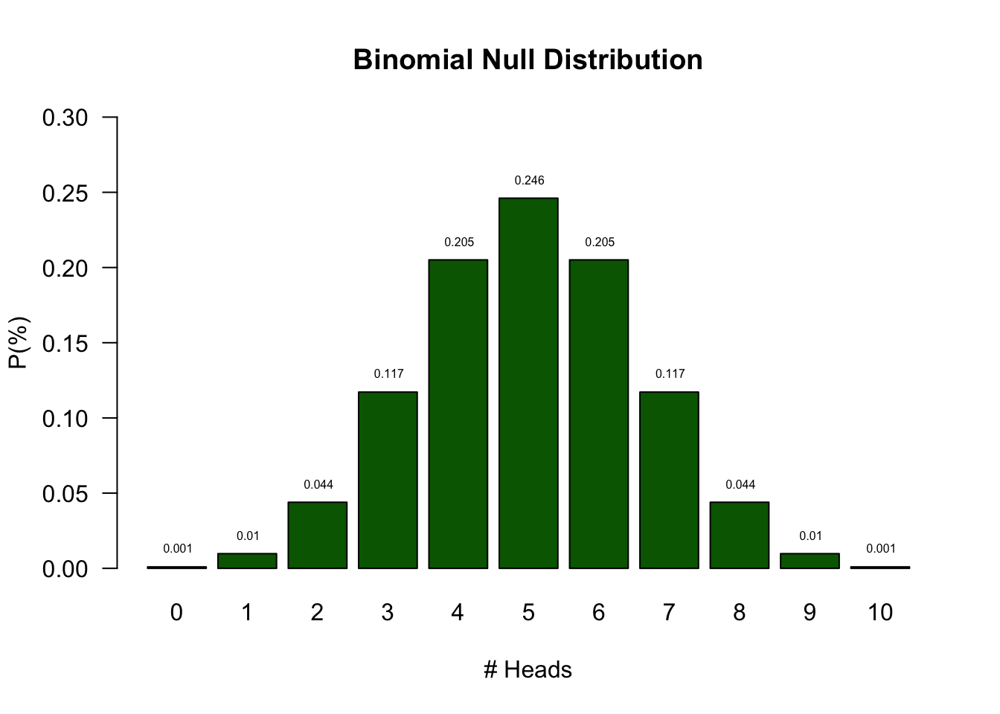
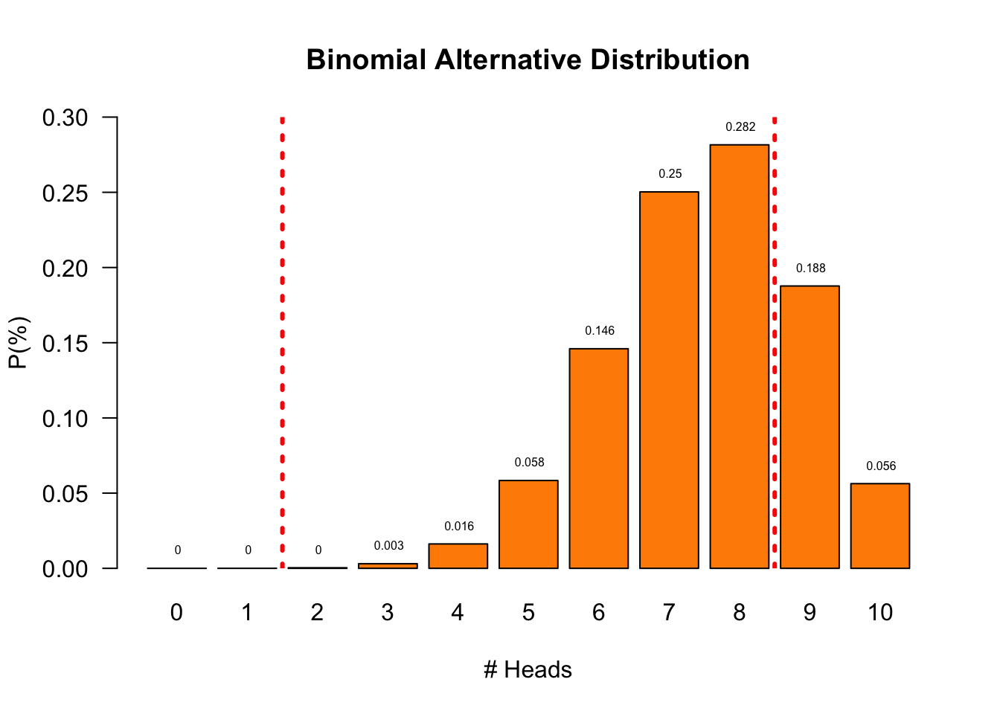
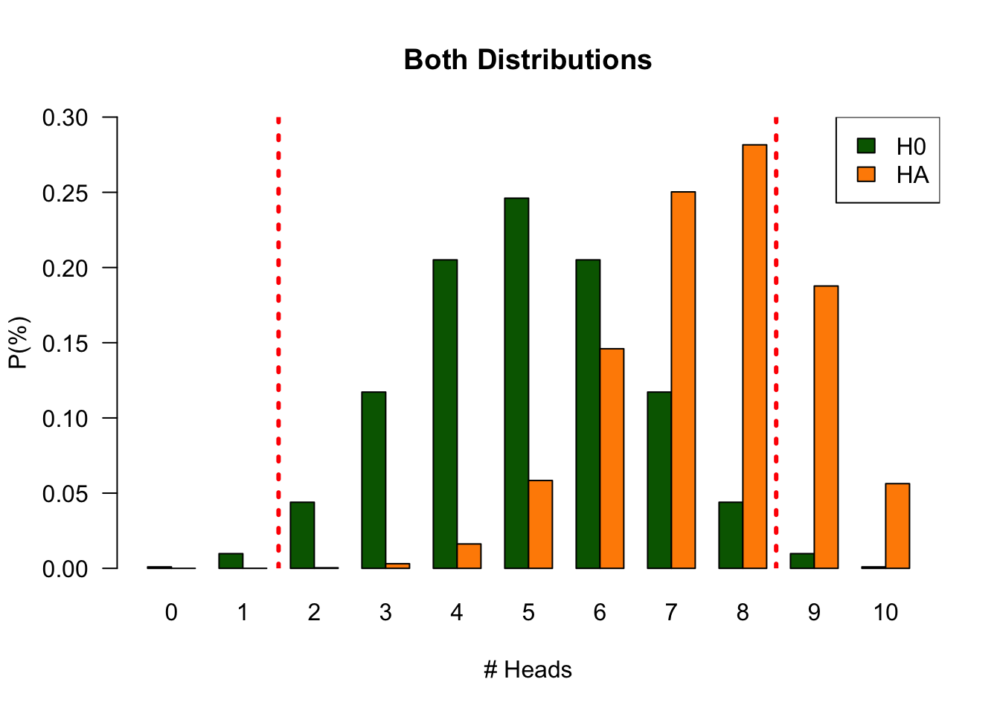

4. Statistical Reasoning
Null Hypothesis Testing
Learning
About SSR
- Book: Discovering Statistics Using JASP
- Software:
- JASP - main tool for analyses, data management
- R - using it as calculator
- Practice:
- Tutorials, PA in Ans
- Companion website of book
- Smart Alex tasks
- Labcoat Leni
- Self-tests
Reasoning in statistics
Source: ARTIST
Statistical Literacy
- Knowledge (Basic understanding of concepts)
- Identify
- Describe
- Skills (Ability to work with statistical tools)
- Translate
- Interpret
- Read
- Compute
Statistical Reasoning
- Understanding
- Explain why
- Explain how
Statistical Thinking
- Apply
- What methods to use in a specific situation
- Critique
- Comment and reflect on work of others
- Evaluate
- Assigning value to work
- Generalize
- What does variation mean in the large scheme of life
Empirical Cycle
By Adriaan de Groot
The components
- Observation
- Idea for hypothesis
- Induction
- General rule
- Hypothesis
- Deduction
- Expectation / Prediction
- Operationalization
- Testing
- Test hypothesis
- Compare data to prediction
- Evaluation
- Interpret results in terms of hypothesis
Explained by Annemarie Zandscholten
Experiment
- What are some important statistical tools?
Test
edu.nl/fn3r3
Measurement Tool
- Multiple choice test true/false
- Q1: The vacuum state in quantum field theory is not actually empty but contains fluctuations of virtual particles.
- 10 items/questions
- When do we decide someone is an expert?
Empirical Cycle
- Observation Someone seems to be very knowledgeable on physics
- Induction They could be an expert in the field
- Deduction \(H_0\): P: \(\theta = 0.5\) → C: I was guessing
- Deduction \(H_A\): P: \(\theta > 0.5\) → C: I have knowledge
- Deduction \(H_A\): P: data \(\neq\) EV → C: candidate is expert
- Testing Choose \(\alpha\) and Power
- Evaluation Make a decision
What happens if they are guessing?
Null Distribution
Let’s analyse the null distribution of the results.
Distributions
What is the difference between
- Population distribution
- Sample distribution
- Sampling distribution
Distributions
Binomial distribution
\[P(k \text{ success out of } n \text{ trials} \mid \text{probability } p) = {n\choose k}p^k(1-p)^{n-k}\] where \[ {n\choose k} = \frac{n!}{k!(n-k)!} \]
With values:
n <- 10 # Sample size
k <- 0:10 # Discrete probability space (numbers 0, 1, ..., 9, 10)
p <- .5 # Probability of correct guessProbabilities

Testing
The candidate had 8 items correct. Can we conclude they are a physics expert?
- As you can see from the distribution of novice scores, we cannot conclude that by definition.
- What we can do is indicate how rare 8 is in a novice.
Testing
- Based on the null distribution we can see that the expected value (EV) is 5
- We can now define the \(H_0\) hypothesis: \(H_0: EV = 5\)
- What is the alternative hypothesis?
- The alternative hypothesis describes a situation where the candidate is expert
- We could say that the alternative hypothesis is not 5
- \(H_A: EV \ne 5\)
- We could also formulate our \(H_0\) and \(H_A\) more abstract:
- \(H_0:\) the candidate is novice
- \(H_A:\) the candidate is expert
- What criterion should we use to conclude that one would be expert?
- In the social sciences this \(\alpha\) criteria is often 5%.
- Candidate scored 8 items correct. That is more frequent than 5%.
- Therefore, we conclude that our candidate is probably novice but we can never be sure.
Null Distribution
Observations outside the dashed lines are significant for \(\alpha = 0.05\)
Alternative Distribution
But we have no clue what this distribution could look like.
For now let’s assume the probability of answering an item correctly is .75

\(H_0\) and \(H_A\) Distribution

End
Contact